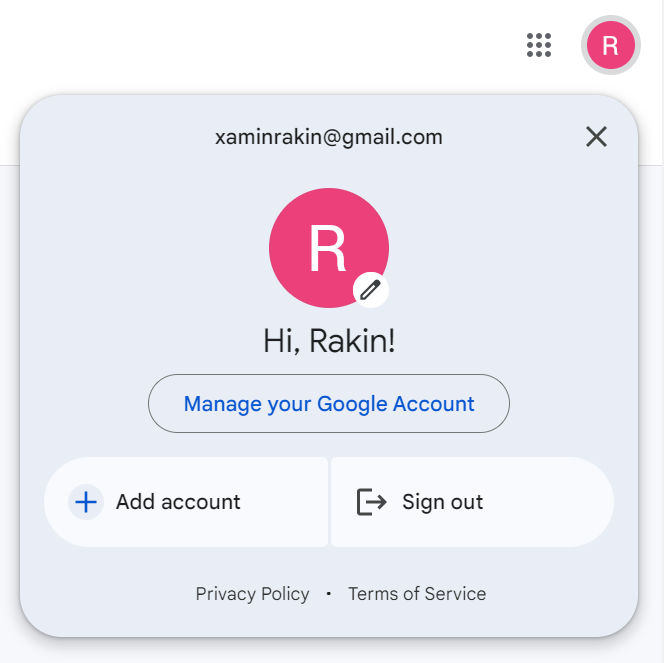

Install the extension from the official Google Chrome Web Store by copying and pasting the link below to the chrome window you just opened with the account assigned to you.
Please double check that the account in this chrome page is the one we assigned to you, but not your own chrome account.

Please notice that this extension is specifically related to the account we assigned to you.
It will not interfere with the usage of your own accounts. Logging out the account later will automatically disable the extension.
Click Add extension to install the extension.
Verify that the extension is installed:
[Optional] Pin the extension to the task bar for easy access
Click the extension icon on the top right of the screen, enter your prolific ID and click the 'Login' button. Be sure to verify that the ID is correct, as we may not be able to compensate you if you enter the wrong ID.
Click on redirect to go directly to the 'For You' page on Google News.
While on the 'For You' page, start with the news browsing by clicking on news that
interests you. The webpage will automatically refresh after you clicked on a news, this is
the intended behavior. You are not required to read the content of the news article in this
study.
Repeat step 12 for 20-30 times.
The system will give the link to a demographic survey. The link will be displayed once step 13 is finished.
Finish the demographic survey and get the confirmation code.
Finish the main study by typing the confirmation code in the prolific.